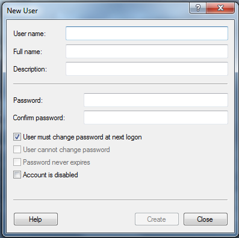

How To – Add a New User to Windows
This How To provides the steps required to add a user on a computer that is runnining a Windows operating system.
To Add a New User
Make sure that the computer and monitor are connected to a power source and that the associated keyboard, mouse and monitor cables are properly connected.
- Log on to the computer as Administrator.
- From the Start menu at the bottom of the screen, select Control Panel. The All Control Panel Items window is displayed.
- From the All Control Panel Items window select Administrative Tools.
- Select Computer Management.
The Computer Management screen is displayed.
- Double-click on System Tools to expand the directory.
- Double-click on Local Users and Groupsto expand the directory.
- Double-click on the Users folder.
- From the Users panel, select More Actions -> New User...
The New User screen is displayed.

- Enter the user name of the new user in the User name field (i.e. jsmith).
- Enter the name of the new user in the Full name field (i.e. Jane Smith).
Entering the full name of the new user is optional.
- Enter a description of the new user in the Description field (e.g.: engineer).
- Enter the password for the new user in the Password and Confirm password fields.
- Select one of the following password options on the New User screen:
- User must change password at next login
- User Cannot Change Password
- Password Never Expires
- Account is disabled
- Select Create.
The new user is added to the selected group.